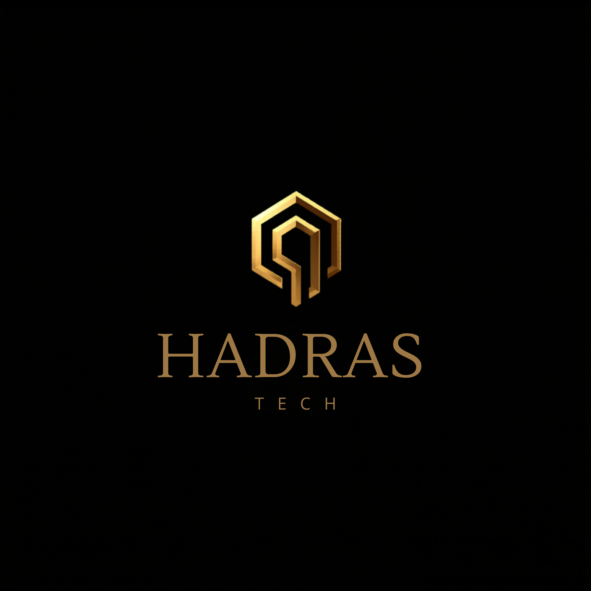
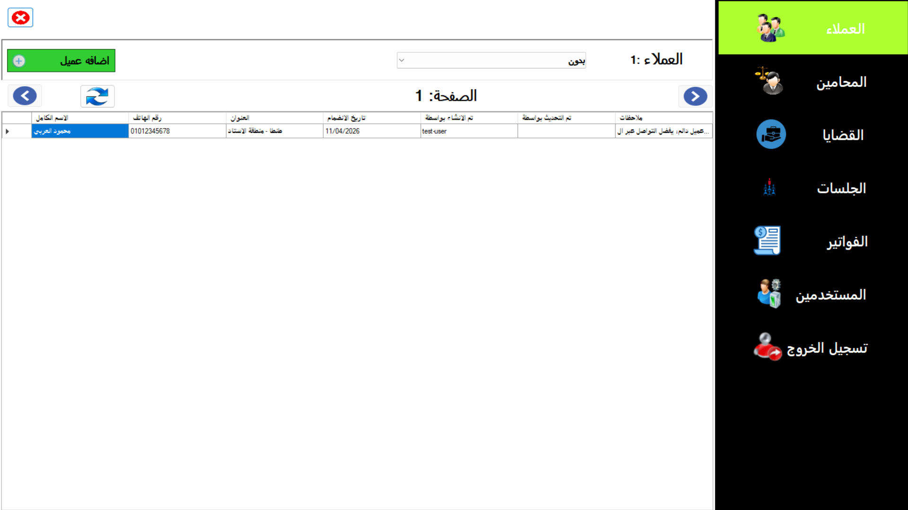
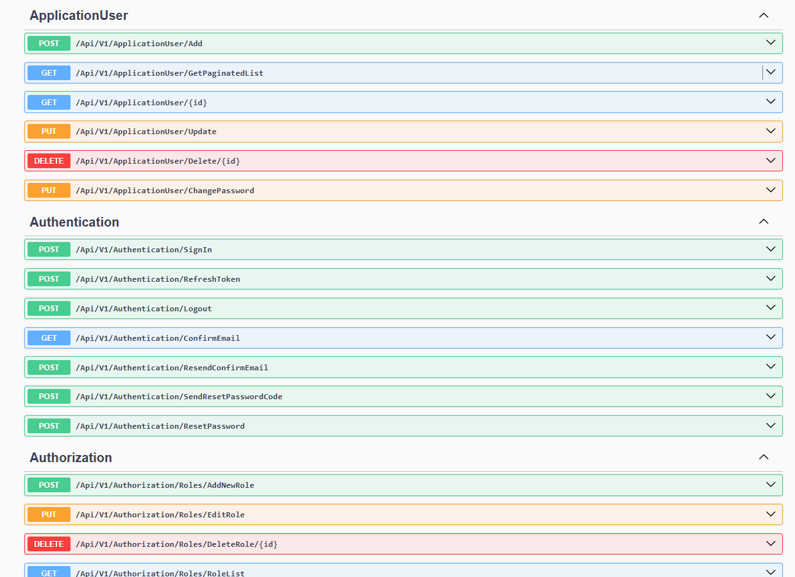
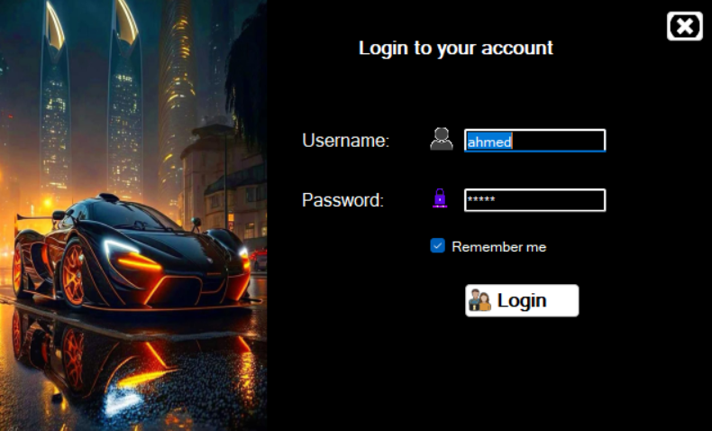

About Me
I am a Software Developer proficient in C#, C++, and SQL. I specialize in engineering comprehensive desktop solutions and scalable backend web applications using ASP.NET Core, Clean Architecture, and modern RESTful APIs. As the Founder and Lead Developer of Hadras Tech, I focus on building secure, high-performance systems tailored for professional environments like clinics and law firms, ensuring seamless data management and operational efficiency.
Technical Skills
- Programming Languages: C++, C#
- Architecture & Design: Clean Architecture, 3-Tier Architecture, Object-Oriented Programming (OOP), Data Structures & Algorithms
- Web Development: ASP.NET Core MVC, ASP.NET Core Web API, HTML5
- Desktop Development: WinForms, ADO.NET
- Database Management: Microsoft SQL Server, Transact-SQL (T-SQL), Entity Framework Core, LINQ
Projects & Professional Experience
Hadras Tech Solutions

- Directing the development of professional desktop applications designed specifically for legal and medical practices.
- Engineering robust backend architectures prioritizing data integrity and security, utilizing centralized databases without compromising performance.
Law Firm Management System

- Engineered a comprehensive desktop application tailored for legal professionals to streamline operations and securely manage clients, cases, sessions, lawyers, files, invoices, and payments.
- Optimized UI performance and data retrieval by implementing pagination and advanced search filters.
- Architected a robust database using SQL transactions, stored procedures, functions, and views for optimal data integrity.
School Project API

- Developed a robust backend RESTful API built entirely on Clean Architecture principles.
- Implemented secure JWT authentication and authorization logic to seamlessly manage different user roles, including students and instructors.
DVLD License Management System

- Built a desktop application to manage vehicle licenses.
- Implemented full CRUD operations, search, and reporting features.
Education
Tanta University | Tanta, Egypt
Bachelor of Computer Science and Information Technology
Sep 2023 - May 2027
Languages
- Arabic: Native
- English: Professional Working Proficiency